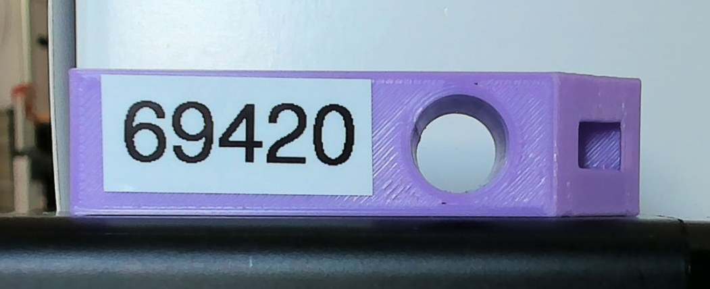

Automatische Sichtprüfung
M3 prüft das Bauteil an der Prüfposition mit einer seitlichen Kamera auf drei Merkmale: Es liest die Seriennummer, vermisst den Lochdurchmesser und prüft, ob die Kerbe vorhanden ist. Nur wenn alle drei passen, ist das Teil ein Gutteil.
01Auf einen Blick
Eingabe
Ein Bild der Seitenkamera (3840 × 2160 px). Das Bauteil liegt an der Prüfposition, Etikett, Loch und Kerbe zeigen zur Kamera. Dafür sorgt die eindeutige Orientierung aus M1 (Fase) zusammen mit der festen Ablagepose von M2.
Ausgabe
Ein InspectionResult: serial_number, hole_diameter_mm,
notch_present, is_good und eine Liste reasons mit allen
Gründen, warum ein Teil schlecht ist. Der Orchestrator entscheidet daraus, ob M2 auf die Gut- oder
die Schlecht-Ablage legt.
„M3 sucht das violette Bauteil im Seitenbild und legt darauf drei Prüfbereiche fest, alle relativ zur Bauteilgröße. Im Etikett liest eine OCR die Seriennummer, im Lochbereich suchen wir die rundeste Region und messen sie mit einem Ellipsen-Fit, im Kerbenbereich die rechteckigste Region. Den Maßstab liefert die bekannte Bauteilhöhe, wir brauchen also keine separate Kalibrierung. Gut ist ein Teil nur, wenn alle drei Merkmale passen, und jeder Fehler wird mit Grund protokolliert.“
02Einordnung im System
M3 arbeitet im Zustand INSPECT. Vorher hat M2 das Teil an der Prüfvorrichtung abgelegt und wartet
auf Anfahrhöhe darüber, außerhalb des Kamerabildes. Danach holt M2 das Teil wieder ab und sortiert es nach
is_good.
class Inspector(ABC): # common/interfaces.py
def inspect(self) -> InspectionResult: ...
@dataclass
class InspectionResult:
serial_number: str | None
hole_diameter_mm: float | None
notch_present: bool | None
is_good: bool
reasons: list[str] # z. B. "notch missing"03Aufbau des Codes
Wie bei M1 sind Bildverarbeitung (InspectionPipeline: Bild rein, Ergebnis raus) und
Kamerazugriff (CameraInspector) getrennt. Dadurch läuft alles auch mit gespeicherten Bildern
und in Tests. Die Gut/Schlecht-Logik evaluate() ist eine eigene Funktion, die Mock und echter
Inspektor gemeinsam nutzen. So entscheiden beide immer nach denselben Regeln.
locate_part() (Bauteil-Box), sub_roi() (Prüfbereich relativ zur Box), find_hole(), find_notch() mit Hilfsfunktionen für Regionen und Kanten.SerialReader: EasyOCR mit Ziffern-Allowlist. Das Modell wird erst beim ersten Aufruf geladen (dauert einige Sekunden), kleine ROIs werden vergrößert.evaluate() (Gut/Schlecht), InspectionPipeline, CameraInspector (implementiert Inspector), MockInspector (ca. 70 % Gutteile, zufälliger Fehler), InspectionDetails mit Debug-Bild.logs/m3.Varianten in der Factory: mock replay (Testbilder als Kamera) camera.
04Verarbeitung Schritt für Schritt
Die Bilder stammen aus der echten Pipeline (InspectionPipeline.process(img, trace)). Die
Vollbilder sind hier auf das Bauteil zugeschnitten. Oben lässt sich das Testbild wechseln, Bild 3 und 4
sind Nahaufnahmen.
05Bauteil, Prüfbereiche & Maßstab
Zwei Ideen machen M3 robust gegen kleine Änderungen von Abstand und Lage:
1 · ROIs relativ zur Bauteil-Box
Die Prüfbereiche sind keine festen Pixelkoordinaten, sondern Bruchteile der Box:
[x0, y0, x1, y1] mit Werten von 0 bis 1. Liegt das Teil etwas weiter links oder näher an der
Kamera, wandern die ROIs automatisch mit.
2 · Maßstab aus der Bauteilhöhe
Die echte Höhe des Bauteils ist bekannt (part_height_mm). Also gilt
mm_pro_px = part_height_mm / box_höhe_px. Eine Messplatte oder Kamerakalibrierung ist nicht
nötig, und der Maßstab bleibt bei kleinen Abstandsänderungen richtig.
Prüfbereiche auf dem Testbild

Die Bilder haben unterschiedliche Abstände und Hintergründe. Weil die ROIs relativ zur Box definiert sind, sitzen sie trotzdem überall richtig. Die Box-Koordinaten stammen aus der echten Pipeline.
Warum der Abstand zur Kamera egal ist
Ändert sich der Abstand, ändern sich Loch und Bauteilhöhe im Bild im selben Verhältnis. Der gemessene Durchmesser bleibt gleich. Auf den Testbildern liegt D/H bei 0,647 bis 0,683, unabhängig davon, ob das Teil 218 oder 784 px hoch ist.
Voraussetzung: Seitenfläche und Kamera stehen annähernd parallel, und
part_height_mm stimmt. Der aktuelle Wert von 15 mm ist ein Platzhalter und muss aus der
Bauteilzeichnung übernommen werden. Ein Fehler hier skaliert jede Durchmessermessung.
06Seriennummer mit OCR
- EasyOCR: eine lernbasierte OCR-Bibliothek (Textdetektion + Erkennung über neuronale Netze), die sich per
pipinstallieren lässt. Tesseract wäre die klassische Alternative, braucht aber eine separate Installation. - Ist die Etikett-ROI niedriger als 64 px, wird sie hochskaliert, weil die Erkennung auf sehr kleine Schrift schlechter anspricht.
- Allowlist „0123456789“: Das Netz darf nur Ziffern ausgeben, Verwechslungen wie O/0 oder I/1 fallen dadurch weg.
- Von allen Textkandidaten wird der mit der höchsten Konfidenz gewählt, der zum regulären Ausdruck
^[0-9]{5}$passt (genau fünf Ziffern). Passt keiner, wird trotzdem das Gelesene gemeldet, damit im Protokoll steht, was erkannt wurde. - Liegt die Konfidenz unter
ocr_min_confidence= 0,4, gilt die Nummer als nicht lesbar (None).
Konfidenzen auf den Testbildern: 0,89 · 0,54 · 1,00 · 0,78. Alle liegen über 0,4, und alle lesen „69420“. Bild 2 ist am weitesten entfernt und hat die kleinste Schrift, daher die niedrigere Konfidenz. Eine feste Kamera mit eigener Beleuchtung sollte das verbessern.
07Lochdurchmesser
- Maske „nicht Stirnfläche“: Je nach Licht ist die Bohrungswand dunkel, oder man sieht hellen Hintergrund durch das Loch. Deshalb suchen wir die Abwesenheit der hellen, violetten Fläche statt einer bestimmten Lochfarbe.
- Filter: Regionen, die oben oder unten den ROI-Rand berühren, scheiden aus. Ebenso alle, die kleiner als 5 % von H² sind.
- Rundheit = Fläche / (π · r²) mit r = Radius des kleinsten umschließenden Kreises. Die rundeste Region wird genommen, wenn sie ≥ 0,75 ist.
- Ellipsen-Fit (
cv2.fitEllipse, Least Squares über alle Konturpunkte). Durchmesser = Mittelwert der beiden Achsen, umgerechnet mit dem Maßstab.
Die Schwelle 0,75 trennt also klar zwischen Loch (gemessen 0,96–0,97) und eckigen oder länglichen Störungen.
Warum Ellipse statt Kreis? Ein kreisrundes Loch erscheint bei leicht schräger Ansicht elliptisch. Der Mittelwert der Achsen bleibt dabei ein guter Schätzer. Die Hough-Kreistransformation wäre eine Alternative, liefert den Radius aber nur in der Auflösung ihres Akkumulators, während der Ellipsen-Fit alle Konturpunkte nutzt (Subpixel-Genauigkeit).
08Kerbe
„Kerbe“ meint die kleine eckige Öffnung am rechten Rand (mit dem Team abgestimmt). Je nach Licht ist sie dunkler als die Fläche, anders gefärbt oder nur an ihren Kanten erkennbar. Deshalb gibt es zwei unabhängige Kandidatenquellen, deren Ergebnisse zusammengeführt werden:
Regionenbasiert
Pixel deutlich dunkler oder deutlich anders gesättigt als die Fläche. Referenz ist der Median eines 3 px breiten Rings am ROI-Rand, der fast nur Stirnfläche zeigt.
Kantenbasiert
Canny-Kanten, geschlossen und als konvexe Hülle. Das greift auch, wenn die Öffnung dieselbe Farbe wie die Fläche hat.
Aus allen Kandidaten zählen nur die, die vollständig in der ROI liegen, eine plausible Größe haben (2–30 % von H²) und deren Seitenverhältnis zwischen 0,5 und 2 liegt. Bewertet wird die Rechteckigkeit = Fläche / Fläche des minAreaRect. Ist der beste Wert ≥ 0,7, gilt die Kerbe als vorhanden (gemessen 0,95–0,97).
Alternative Template-Matching: Man könnte gegen ein Referenzbild der Kerbe vergleichen. Das reagiert aber empfindlicher auf Beleuchtung, Maßstab und Lage. Die Formmerkmale Rundheit und Rechteckigkeit sind dagegen skalierungsunabhängig.
09Gut/Schlecht-Entscheidung
# inspector.py, evaluate()
reasons = []
if serial is None or not re.fullmatch(serial_pattern, serial):
reasons.append("serial number invalid")
if hole_mm is None:
reasons.append("hole not found")
elif abs(hole_mm - hole_nominal_mm) > hole_tolerance_mm:
reasons.append("hole diameter out of tolerance")
if not notch:
reasons.append("notch missing")
is_good = not reasonsAlle Kriterien werden immer geprüft, auch wenn das erste schon fehlschlägt. So steht im Protokoll jeder Mangel, nicht nur der erste. Das ist wichtig für die Auswertung (Konfusionsmatrix) und für die Fehlersuche.
Entscheidungslogik ausprobieren
Dieselbe Logik wie evaluate(), mit den Werten aus system.yaml
(Soll 10,0 mm ± 0,4 mm, Muster ^[0-9]{5}$).
Violette Punkte: die vier gemessenen Testbilder. Die Toleranz dient der Demonstration und entspricht keiner Fertigungsvorgabe.
10Ergebnisse auf den Testbildern
| Bild | Box-Höhe | Seriennr. | OCR-Konf. | Loch px | D/H | Ø mm | Rundheit | Rechteckigk. | Urteil |
|---|---|---|---|---|---|---|---|---|---|
| 1 | 226 | 69420 | 0,89 | 146,2 | 0,647 | 9,71 | 0,96 | 0,97 | GUT |
| 2 | 218 | 69420 | 0,54 | 144,5 | 0,663 | 9,94 | 0,97 | 0,96 | GUT |
| 3 | 471 | 69420 | 1,00 | 305,9 | 0,649 | 9,74 | 0,96 | 0,97 | GUT |
| 4 | 784 | 69420 | 0,78 | 535,1 | 0,683 | 10,24 | 0,96 | 0,95 | GUT |
Maßstab funktioniert: Die Bauteilhöhe im Bild variiert um den Faktor 3,6 (218–784 px). Der Durchmesser bleibt trotzdem bei 9,7–10,2 mm.
Bild 4 weicht ab (D/H 0,683 statt ≈ 0,65): Die Nahaufnahme mit stärkerer Perspektive zeigt mehr Bohrungswand. Am finalen Aufbau mit fester Kamera und festem Abstand fällt dieser Effekt weg. Die Messwiederholbarkeit wird dort bestimmt.
In den automatischen Tests werden zusätzlich künstliche Schlechtteile geprüft: Kerbe bzw. Loch werden im Bild mit Bauteilfarbe übermalt, das Ergebnis muss „schlecht“ mit dem richtigen Grund sein.
11Konfiguration (inspection: in system.yaml)
| Schlüssel | Wert | Bedeutung |
|---|---|---|
inspection_camera.source | 1 | Kameranummer oder Bild-Glob (Replay) |
part_hue | [115, 165] | Farbton des violetten Bauteils (OpenCV H 0–180) |
part_saturation_min, part_value_min | 50, 80 | Mindest-Sättigung/-Helligkeit für die Bauteilmaske |
face_brightness_frac | 0.85 | dunkler als 85 % der Fläche → Loch/Kerbe |
face_saturation_delta | 40 | Sättigungsabweichung → Loch/Kerbe |
label_roi / hole_roi / notch_roi | relativ zur Box | Prüfbereiche [x0, y0, x1, y1] |
part_height_mm | 15.0 | Maßstab (Platzhalter, aus Zeichnung) |
serial_pattern, ocr_min_confidence | ^[0-9]{5}$, 0.4 | Format und Mindestkonfidenz der Seriennummer |
hole_nominal_mm, hole_tolerance_mm | 10.0, 0.4 | Soll-Durchmesser und Toleranz (Platzhalter) |
12Testen & Bedienen
Kommandozeile (aus code/)
# Prüfung auf die Testbilder, Debug-Bilder in logs/m3
python -m m3_inspection.run "m3_inspection/tests/data/*.jpg"
# Tests
pytest m3_inspectionGUI (python -m gui)
Tab M3 Prüfung: Quelle (Testbilder, Kamera, Datei), Bild holen + analysieren,
Erneut analysieren. Der Bauteilausschnitt zeigt die eingezeichneten ROIs, das ist die Ansicht zum
Einstellen nach Änderungen in den Einstellungen.
Tab Ablauf: Prüfung mock / replay / camera. Mit + Zwischenschritte werden alle 14
Bilder gespeichert. Jeder Zyklus landet als Zeile in logs/cycles_<datum>.csv.
13Grenzen, Entscheidungen & offene Punkte
| Thema | Stand / Begründung |
|---|---|
| Klassische BV + OCR-Netz | Formmerkmale sind erklärbar und kommen ohne Trainingsdaten aus. Nur für den Text wird ein vortrainiertes Netz (EasyOCR) genutzt, weil Schriftlesen klassisch aufwändig wäre. |
| Bauteilmaße | part_height_mm, hole_nominal_mm und die Toleranz sind Platzhalter und müssen aus der Bauteilzeichnung übernommen werden. |
| Aufbau | Die Testbilder haben verschiedene Abstände und Hintergründe. Am finalen Aufbau mit fester Kamera, eigener Beleuchtung und Anschlag an der Prüfposition werden ROIs und Schwellen nachjustiert. |
| Echte Schlechtteile | Bisher gibt es nur künstliche Fehler. Ein Testset mit echten Schlechtteilen (fehlende Kerbe, falsches Loch, unlesbares Etikett) fehlt noch für die Konfusionsmatrix. |
| Lage an der Prüfposition | M3 setzt voraus, dass Etikett, Loch und Kerbe zur Kamera zeigen. Das hängt an der Fasenerkennung (M1) und der Wiederholgenauigkeit der Ablage (M2). |
| Farbabhängigkeit | Die Bauteilmaske nutzt den Farbton Violett. Für andere Bauteilfarben muss part_hue angepasst werden. |
| OCR-Laufzeit | Das Laden des EasyOCR-Modells dauert beim ersten Aufruf einige Sekunden (lazy loading), danach geht es schnell. Läuft auf der CPU (gpu=False). |
14Präsentation: Kernaussagen & mögliche Fragen
Die fünf Sätze, die sitzen sollten
- Wir finden das Bauteil über seine Farbe, schließen die Lücken über die Bauteilhöhe und legen alle Prüfbereiche relativ zu dieser Box fest.
- Den Maßstab liefert die bekannte Bauteilhöhe. Damit ist die Messung abstandsunabhängig und braucht keine Kalibrierplatte.
- Die Seriennummer liest EasyOCR, beschränkt auf Ziffern und geprüft gegen das Format „fünf Ziffern“.
- Loch = rundeste Region (Rundheit ≥ 0,75) mit Ellipsen-Fit. Kerbe = rechteckigste Region (≥ 0,7) aus Regionen- und Kantensuche.
- Gut nur, wenn alle drei Merkmale passen. Jeder Fehler wird mit Grund protokolliert, die Grundlage für die Auswertung.
Mögliche Fragen
Wie genau ist die Durchmessermessung?
Auf den drei Bildern mit ähnlicher Perspektive streut D/H um ±1,2 % (0,647–0,663), bei 15 mm Bauteilhöhe also etwa ±0,1 mm. Die Nahaufnahme weicht mit 0,683 stärker ab. Die eigentliche Wiederholgenauigkeit wird am festen Aufbau gemessen, dafür gibt es die CSV-Protokolle je Zyklus.
Warum keine Kamerakalibrierung für den Maßstab?
Weil jedes Bild seine eigene Referenz mitbringt: die Bauteilhöhe. Verschiebt sich das Teil etwas zur Kamera hin, werden Loch und Höhe gleichermaßen größer, und das Verhältnis bleibt. Voraussetzung ist eine annähernd parallele Ansicht und eine korrekte Bauteilhöhe.
Warum EasyOCR und nicht Tesseract?
EasyOCR ist lernbasiert, robust auf Fotos mit unruhigem Hintergrund und per pip installierbar, ohne
separates Programm. Mit Ziffern-Allowlist und Regex-Prüfung ist es für fünfstellige Nummern sehr zuverlässig:
69420 auf allen Testbildern. Tesseract wäre eine gleichwertige Alternative mit mehr Vorverarbeitungsaufwand.
Warum nach „nicht Fläche“ suchen statt nach dem Loch selbst?
Weil das Loch je nach Licht und Hintergrund ganz verschieden aussieht: dunkle Bohrungswand oder heller Hintergrund durch das Loch. Das Einzige, was sicher gilt: Es ist nicht die helle violette Stirnfläche. Die Form (Rundheit) trennt dann das Loch von anderen Regionen.
Was passiert, wenn das Teil falsch herum an der Prüfposition liegt?
Dann liegen die Merkmale nicht in ihren ROIs. Seriennummer, Loch oder Kerbe werden nicht gefunden, und das Teil wird als schlecht einsortiert, mit Gründen im Protokoll. Das ist ein „sicheres“ Fehlverhalten: Ein unklares Teil wird nie als gut durchgelassen. Verhindert wird es über die eindeutige Orientierung aus M1 (Fase).
Kann ein schlechtes Teil als gut durchrutschen?
Die Logik ist bewusst konservativ: Jedes fehlende oder unsichere Merkmal (niedrige OCR-Konfidenz, Rundheit unter Schwelle, Durchmesser außer Toleranz) führt zu „schlecht“. Ein falsch-gut wäre nur möglich, wenn eine Störung zufällig wie Loch oder Kerbe aussieht. Die Formschwellen und Größenfilter machen das unwahrscheinlich. Bewertet wird das mit einer Konfusionsmatrix auf einem Testset.
Wie wird das ohne Kamera getestet?
Die Pipeline ist kamerafrei: Die Variante replay spielt Bilddateien ab. Die Tests prüfen echte Gutteile
und künstlich erzeugte Schlechtteile (übermalte Merkmale). Der MockInspector liefert zufällige, aber logisch
konsistente Ergebnisse für den Gesamtablauf.
Warum wird bei mehreren Fehlern nicht beim ersten abgebrochen?
Für die Auswertung und die Fehlersuche will man alle Mängel eines Teils kennen. Das reasons-Feld
landet im CSV-Protokoll jedes Zyklus.
15Glossar
- ROI
- Region of Interest: der Bildausschnitt, in dem ein Merkmal gesucht wird.
- OCR
- Optical Character Recognition: automatisches Lesen von Text im Bild.
- Allowlist
- Menge der Zeichen, die die OCR ausgeben darf (hier nur Ziffern).
- Regulärer Ausdruck
- Muster für Text;
^[0-9]{5}$= genau fünf Ziffern. - HSV
- Farbraum aus Farbton (H), Sättigung (S) und Hellwert (V); gut für Farbschwellen.
- Morphologisches Schließen
- Dilatation, dann Erosion: füllt Lücken, deren Größe kleiner als das Strukturelement ist.
- Rundheit
- Fläche / Fläche des kleinsten umschließenden Kreises (1 = Kreis).
- Rechteckigkeit
- Fläche / Fläche des kleinsten umschließenden (gedrehten) Rechtecks (1 = Rechteck).
- Ellipsen-Fit
- Ellipse, die die Konturpunkte nach kleinsten Fehlerquadraten am besten beschreibt.
- Canny
- Kantendetektor mit zwei Schwellen (hier 30/90) und Hysterese.
- Konfusionsmatrix
- Tabelle aus richtig/falsch gut/schlecht eingestuften Teilen, um die Prüfgüte zu bewerten.